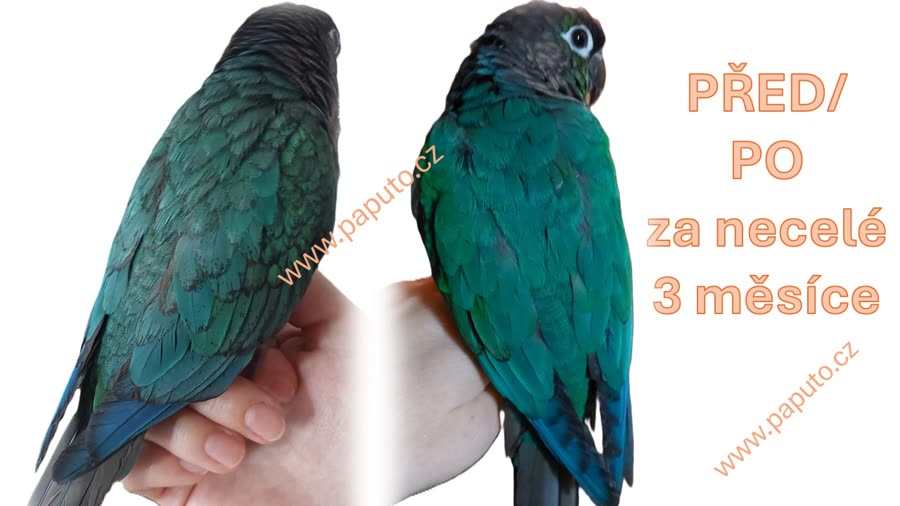
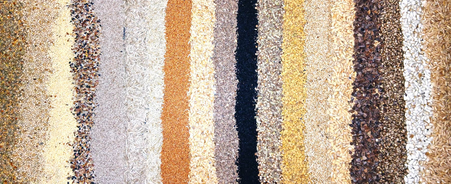
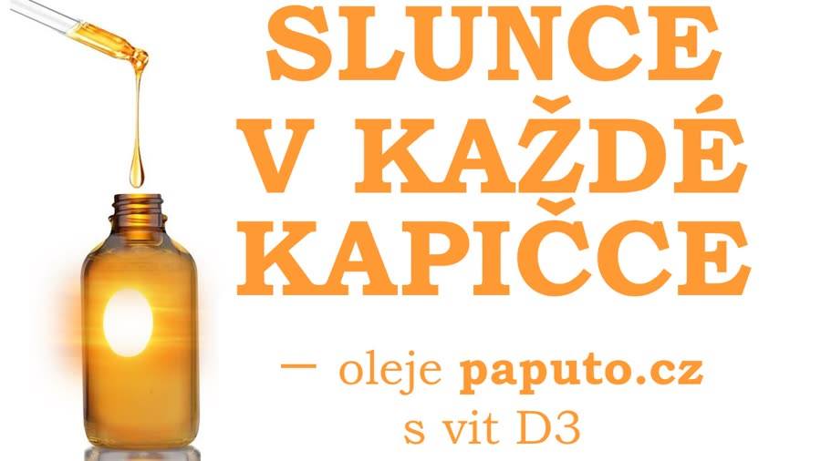
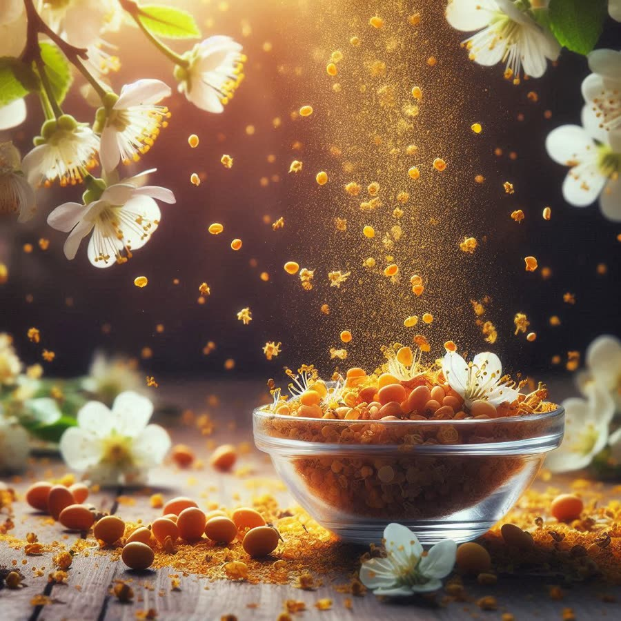
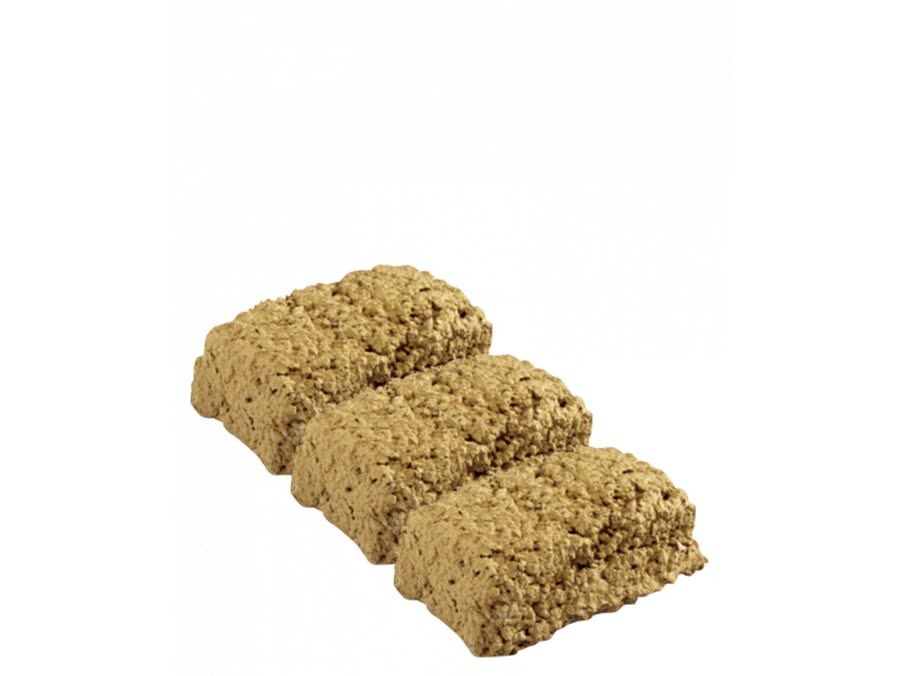
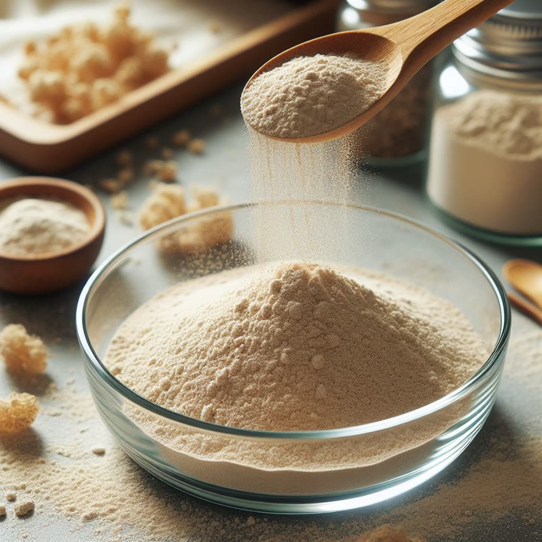
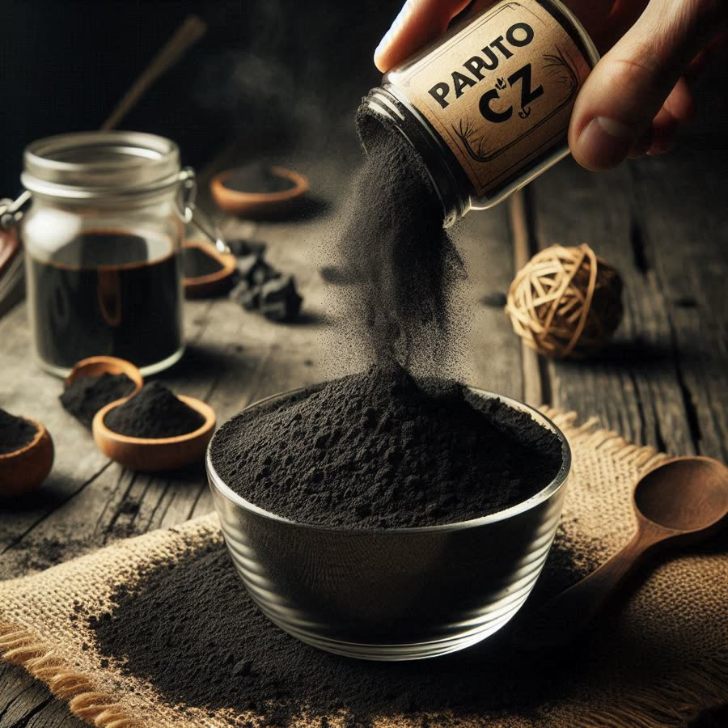
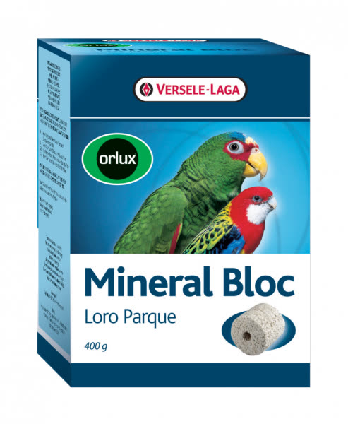
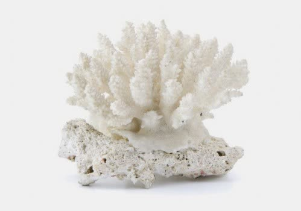

Samotné zrní a zelenina nestačí. Sestavíme vašemu papouškovi kompletní přírodní jídelníček – krok za krokem, podle druhu i zdravotního stavu.

Každý druh potřebuje jinou směs. Klikněte a ukážeme vám přesně, co mu dát.
Produkty jsou v e-shopu očíslované 1–8. Dohromady dodají vše, co samotné zrní a zelenina neobsahují.

1Ručně míchaná směs. Začněte variantou START.

2Když papoušek nesedí na přímém slunci.

3Vitamíny z květů, plodů a bylin.

4Minerály a přirozená detoxikace.

5Celá skupina vitamínů B včetně B12.

6Huminové kyseliny pro zdravé trávení.

7Volně k dispozici v kleci.

8Přírodní vápník pro kosti a peří.
Často nejde o „hlavu“, ale o misku s krmením. Ke každé potíži máme návod i produkty.
Rychle doplnit všechny živiny, vitamín D3 a omega-3.
Návod a produkty →Směsi a byliny, které pomáhají čistit a regenerovat játra.
Zobrazit →Šetrná přírodní antiparazitika jako Papendo.
Zobrazit →Křehké kosti, špatné peří, problémy se snášením.
Přečíst článek →Zklidnění při svědění kůže, stresu a neklidu.
Zobrazit →Základní lékárnička nejen pro papoušky.
Zobrazit →Jmenuji se Jana Jiroušková Kamberská. Paputo je jediný e-shop zaměřený na organickou a komplexní stravu pro papoušky. Směsi míchám a balím ručně podle druhu, zdravotního stavu i vašich přání.
Harmonogram krmení podle schématu Paputo pro váš druh. Vytiskněte si ho a už nikdy nezapomenete.
Individuální konzultace a výživový plán přímo pro vašeho papouška.